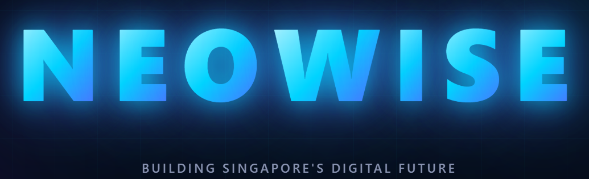

JRN Parade State
Management System
A purpose-built digital platform for real-time attendance tracking, parade state generation, and personnel management — designed specifically for Jurong Node's operational tempo.
What We Were Dealing With
Before this system, parade state management at Jurong Node relied on manual, error-prone processes.
Manual Paper / Telegram Reporting
Admins recorded attendance on physical paper, then manually compiled and typed each status into a Telegram message — prone to miscounts, missing names, and formatting errors before sending up the chain of command.
Time-Consuming Every Parade State
4 parade states per day × 3 platoons means up to 12 separate compilations. Each one took significant time with no standardised format.
No Status Carry-Forward
Personnel on MC, HL or leave had to be re-entered every Parade State. Night Strength S/I vs S/O logic was handled inconsistently between admins.
No Audit Trail
No historical records, no accountability for who submitted what, and no easy way to generate formal PDF parade states for official reporting.
What is the JRN Parade State App?
A mobile-first web application accessible on any device — no installation required. Admins log in, mark attendance for their platoon, and the system handles the rest.
- 🌐Runs on any phone, tablet or browser — no app store required
- ☁️Cloud-hosted on Vercel with Firebase real-time database — zero downtime
- 🔐Role-based access: Commander view vs Admin view
- 🔄Multiple admins can mark simultaneously — changes sync in real-time
- 📱Fully mobile-optimised
- 💾Complete history log of every parade state ever submitted
How it works
1. Sgt opens the link on their phone
2. Selects date + time of day
3. Marks each personnel's status
4. System auto-generates Telegram message + PDF
5. Submits — commander sees it instantly
Built specifically for JRN
Every feature was built in response to real feedback from P1, P2 and HQ admins. This is not an off-the-shelf product — it is purpose-made for our workflow.
Key Features
30+ Status Types
MC, HL, ARF, Local Leave, Overseas Leave, Duty, DTO, SAFER/UPCAT, CCL, Hospitalised, AWOL, and more — all with date-range tracking.
Auto Telegram Message
One tap generates a fully formatted Node message, Commander message, MC list, and quick summary — ready to paste into Telegram.
Official PDF Generation
Generates a formal A4 parade state PDF per platoon, with all Parade States, statuses, remarks and signatures — for official records.
S/I vs S/O Logic
System automatically handles Night Strength — S/O personnel stay marked through night, S/I personnel are cleared. No manual adjustment needed.
Buddy System
Generates buddy pairs sequentially by parade state order, one page per platoon. PDF and text copy for Telegram sharing.
Custom Report Builder
Commanders can filter by platoon, PES status, attendance status, or S/I·S/O — then export as PDF or copy as text.
JRN App vs oneNS QR Code System
Apparently HQ uses QR code-based attendance. Here's how the approaches compare for JRN's needs.
| Feature / Requirement | QR Code System | JRN Parade State App |
|---|---|---|
| Multiple Parade States per day (HLS / FP / MP / LP / Night Strength) | ❌ Not supported | ✅ All 4–5 Parade States |
| Complex status tracking (MC, HL, Leave, Duty, ARF…) | ❌ Present / Absent only | ✅ 30+ statuses |
| Works when personnel are off-camp (leave, hospitalised) | ❌ Requires physical scan | ✅ Sgt marks remotely |
| Buddy system — cannot scan for someone else (gaming) | ⚠ Proxy scanning risk | ✅ Sgt-controlled, no gaming |
| Auto-generate Telegram / Signal message for command | ❌ Manual extraction | ✅ One-tap copy |
| Official PDF parade state for records | ❌ Not available | ✅ Instant PDF |
| S/I vs S/O Night Strength logic | ❌ Not applicable | ✅ Automated |
| No special hardware / QR scanner needed | ⚠ Requires QR setup | ✅ Any phone / browser |
Why This Approach is Right for a Unit
Built Around Military Workflow
QR systems are designed for offices where all staff are physically present. A unit has personnel on outfield, hospitalised, on leave, or on duty at different locations. Our system reflects that reality.
Admin as Accountable Party
The admin marks attendance and submits — creating a clear chain of accountability. QR scanning puts responsibility on the individual soldier, making proxy scanning and manipulation harder to prevent and detect.
No Infrastructure Required
QR systems need physical QR code setups, scanners, or dedicated terminals. Our system needs nothing beyond a phone with internet.
Time Savings Are Significant
With 127 personnel across 3 platoons, each Parade State previously took 30–45 minutes to compile and send. Across 4–5 Parade States × ~250 working days, that is hundreds of man-hours per year returned to productive soldiering.
Zero Ongoing Cost
Hosted on Vercel's free tier. Firebase's free plan covers our data volume. No subscription, no licensing, no hardware procurement required.
Data Stays Internal
Password-protected access, role-separated views for commanders vs admins. Personnel data is stored in Google Firebase — an enterprise-grade, SOC 2 compliant cloud database.
Current System in Production
The system is live and actively used by admins across all three platoons today.
Multi-user Real-time Sync
P1, P2 and HQ admins can all mark simultaneously. Firebase atomic writes prevent data conflicts — no race conditions.
Full History Log
Every parade state is archived. Commanders can retrieve and re-download any past date's PDF at any time.
Used Daily by Admins
Actively adopted across all platoons with no training required — the UI is intuitive enough for immediate use.
Reliability & Data Security
- 🔐Role-based access control — Commanders get a read-only overview; admins get marking rights for their platoon only
- ☁️Firebase Realtime Database — Google enterprise infrastructure, 99.99% SLA, SOC 2 / ISO 27001 certified
- 🌍Hosted on Vercel — CDN-distributed, automatic HTTPS, zero-downtime deployments
- 🛡️No sensitive PII stored beyond name, rank, phone — same data level as a physical attendance register
- 🔄Atomic writes — each attendance record is written individually, eliminating data corruption from simultaneous updates
- ⚠️Error boundary — if any component crashes, users see a clear error screen with contact info rather than a blank page
- 📵Password-protected — separate passwords for admin and commander
Technology Stack
React 18 — UI framework
Firebase Realtime DB — cloud database
Vercel — hosting & CDN
jsPDF — PDF generation
SheetJS — Excel export
No server to maintain. No database to manage. Auto-scales to any load.
Maintainability
Single codebase. GitHub-based version control with automatic deployments. Any change is live within 60 seconds of a code push. Full history of every code change.
Development Roadmap
Planned enhancements in order of priority, based on ground feedback.
Seamless Posting-In Onboarding
Currently: Physical Post-In Info Paper → Manual keying of posting info → Manual keying of BIODATA → Manual entry into parade state. The goal is to link posting info data directly into the system so new personnel are onboarded seamlessly and accurately. Posting info will not be stored in the app — it will only be used to pre-fill the necessary fields.
Resilience When Servers Are Down
If the server is unreachable, admins can still mark attendance offline as per normal. Once connectivity is restored, all changes automatically sync back to the live system — no data is lost.
Sync with Node-Wide Shared Excel
Link the parade state system with the existing shared Excel on MS Teams used across all nodes — eliminating duplicate data entry and keeping all stakeholders automatically updated from a single source of truth.

A System Built by JRN, for JRN
This is not a vendor solution. It was built in-house, driven by ground feedback, costs nothing to run, and continues to evolve. The request is simple — official endorsement to continue operating and improving this system for Jurong Node.
This system was developed under Neowise.sg, a Singapore-based tech company co-founded by CPL Vinith. We kindly seek CO's permission to list the JRN Parade State System as an official product in Neowise.sg's portfolio. This would be a testament to what Jurong Node's people are capable of building — and would carry no cost, obligation, or external exposure to the unit.
Scan to Access the System
Point your phone camera at the QR code below to open the live system instantly. No app download required.